来源：https://aa5a24dduio.feishu.cn/docx/ONE3dr8CMoIcBAxfZNocBaeXngg
最近参加了AI赋能电商的航海，在20号直播前的工作流问题接龙中，来来教练抛了个“批量制作无缝图案”的课题，正好我之前搭建过这类工作流，所以给大家分享下思路和成品文件。
无缝图案的核心是，同一张图不论怎么复制拼接，接缝处的图案都能完美匹配，因此需要将原图分成四块并打散排布，然后通过采样进行局部重绘处理。
详细步骤请移步飞书，成品工作流文件也作为附件上传了，欢迎有需要的圈友自取。
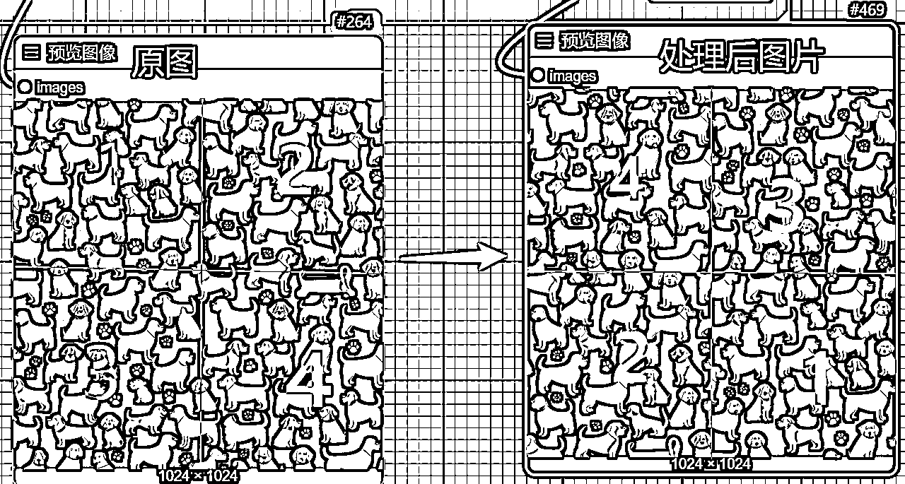
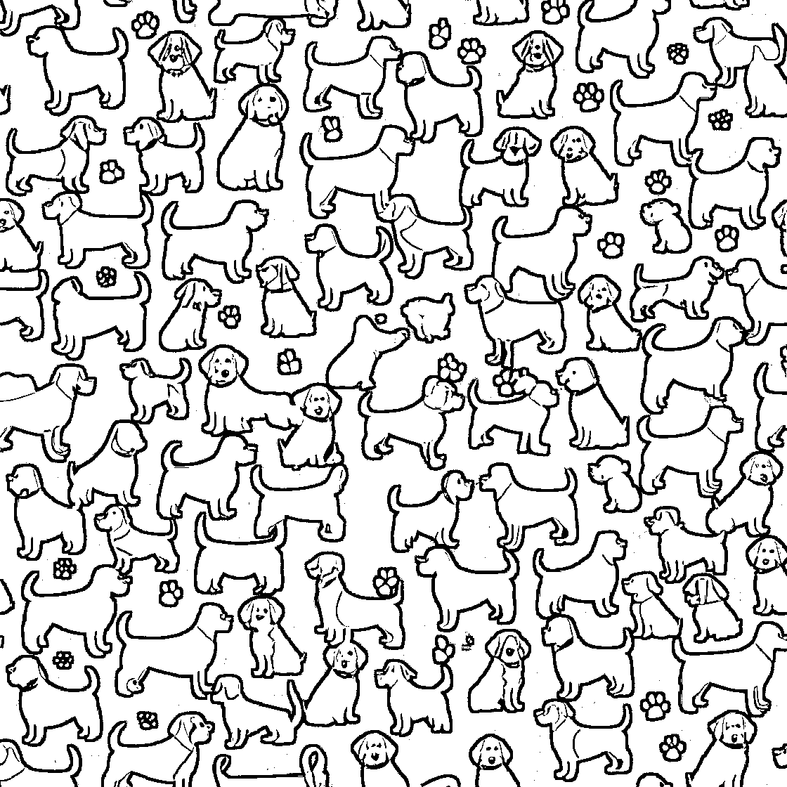
为了兼顾出图质量与出图速度，本工作流使用sdxl作为底模，选用的模型为juggernautXL_v9-Lightning_4S，为了方便，直接使用了全局输入节点，省去后续连线的麻烦。
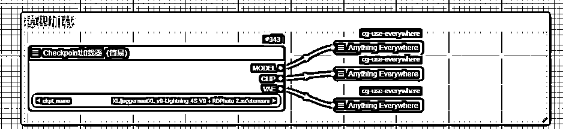
生成无缝接图，可以通过文生图方式（输入文字生成图片），也可以通过图生图方式（输入图片生成新的图片）。
这里先演示文生图——
①首先通过CLIP文本编码节点，输入正面提示词和负面提示词：
正面提示词：texture,dogs,patterns,vector
负面提示词：这里直接偷懒，用了一个embedding文件，也可以自己填入常用的负面提示词，比如low quality等等
②因为有两个采样生图过程，提示词条件也需要连接两次，这里也是使用了一个变量节点用于输入输出。
（小问题：这里为什么不能使用上面模型加载时的全局输入方式？欢迎评论区交流）
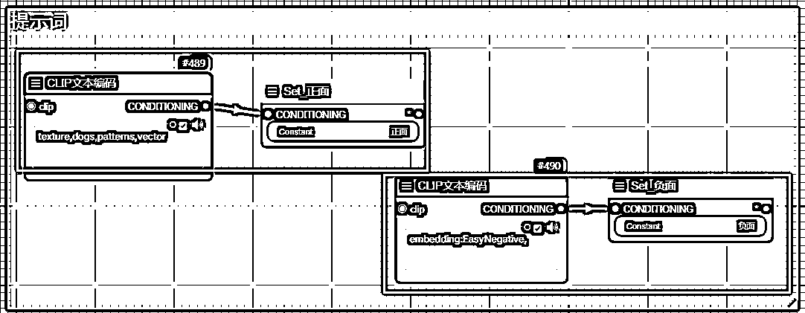
③文生图及其结果
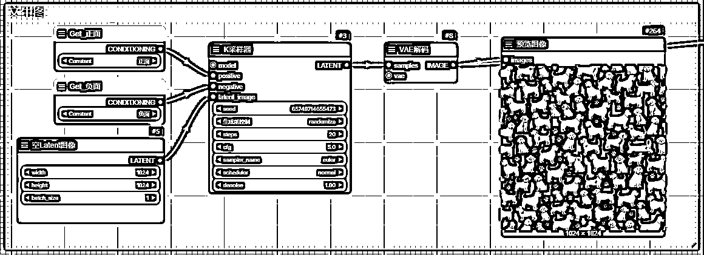
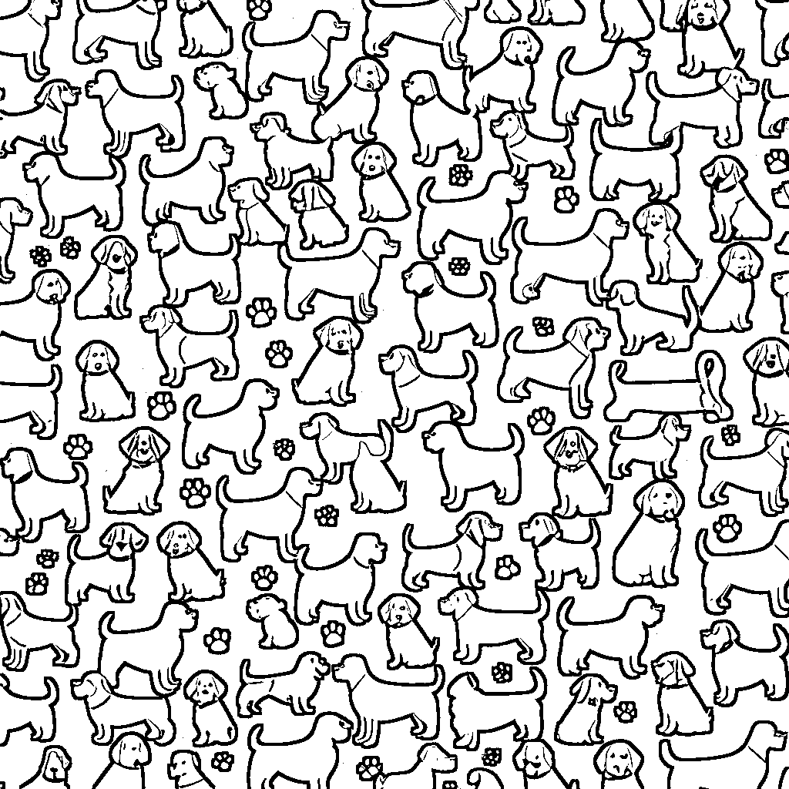
到这里，工作流的第一部分就完成了，先使用模型和提示词控制，生成一张图片。
可以看到，这张图片并非四方连续图案，接下来要通过工作流的第二部分，将这张图片变为四方连续图案方便拼接。
①在第二部分，需要对图片做预处理，需要用到的是 Image Tile Offset 这个核心节点
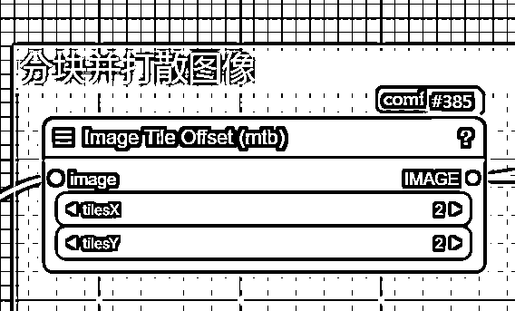
这个节点的作用是将原本的图片分为4块，并打散排布，具体示意如下
将原图切割为4块，并打散排布，如右图所示，通过这样的方式使得外侧各边相连时，就变成了无缝贴图。
但是图片的中间，即红线十字部位，是有明显接缝的，所以需要通过再一次采样，进行重绘处理。
②制作重绘蒙版
通过外补画板节点，将图片向外扩图，然后同样使用Image Tiles Offset节点将扩图后的图片分块打散，然后对蒙版做模糊增长处理，这一步是为了在模型重绘时，使模型能够参考到原图内容，不至于生成和原图差异很大的内容，导致图案无法使用。
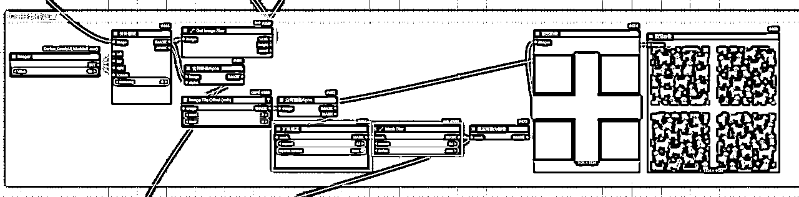
③重绘消除接缝
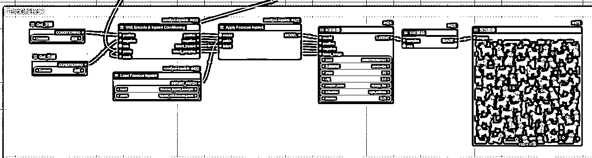
接下来就是使用模型，进行局部重绘，消除内部接缝。
在重绘模型这里，为了得到更好的重绘效果，这里使用fooocus模型进行重绘。
fooocus模型在重绘和扩图上的表现比直接使用sdxl模型重绘的效果要更好一些。
最终生成的结果如下所示，有心的话可以看到，已经成功消除了接缝！
④多图拼接效果
为了验证是否是四方连续图案，可以通过多图拼接功能来看一看拼接后的效果。
如图所示，4张图案拼接后，可以看到拼接处是没有缝隙的，这样，一张四方无缝图案就制作好了~
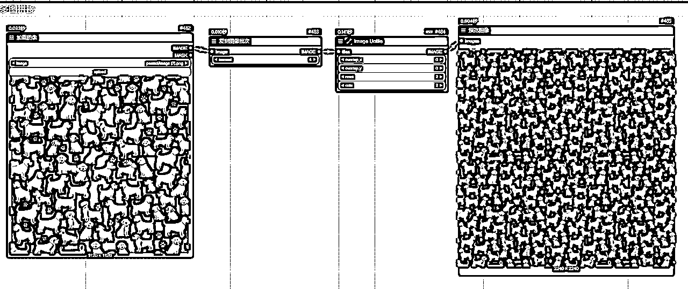
回顾前面的流程，重点在于第二部分，将一张图片制作成四方连续图案。
文生图、图生图的区别就在于，这张图片是使用文字生成的，还是已有的图案。
如果要将已有的图片制作成四方连续图案，其实也非常简单，
只需要上传已有图片，并将反推图片内容，将反推出来的文本连接到正面提示词就可以了。
另外别忘了，还需要将上传的图片，连接到第二部分的图片输入。
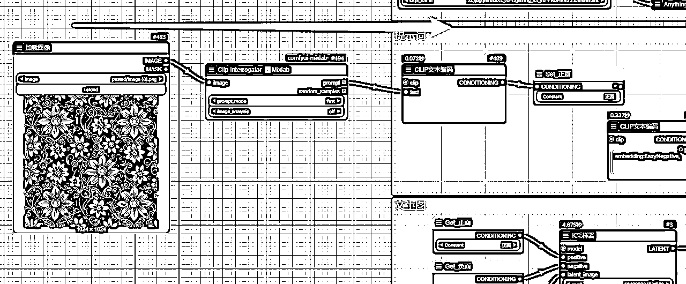
最后是工作流分享，文生图和图生图两套工作流，我是直接做出来了，分享给大家，如果有疑问也欢迎交流~
在生成完无缝贴图后，大部分情况下还需要将图案套到产品上去，以前这个操作需要用到ps。
但既然大家都要用comfyui了，那最好的方式还是把生图、套图都放在一个流程里完成。
这个功能我也已经开发出来了，给大家看下效果，有需要欢迎沟通。
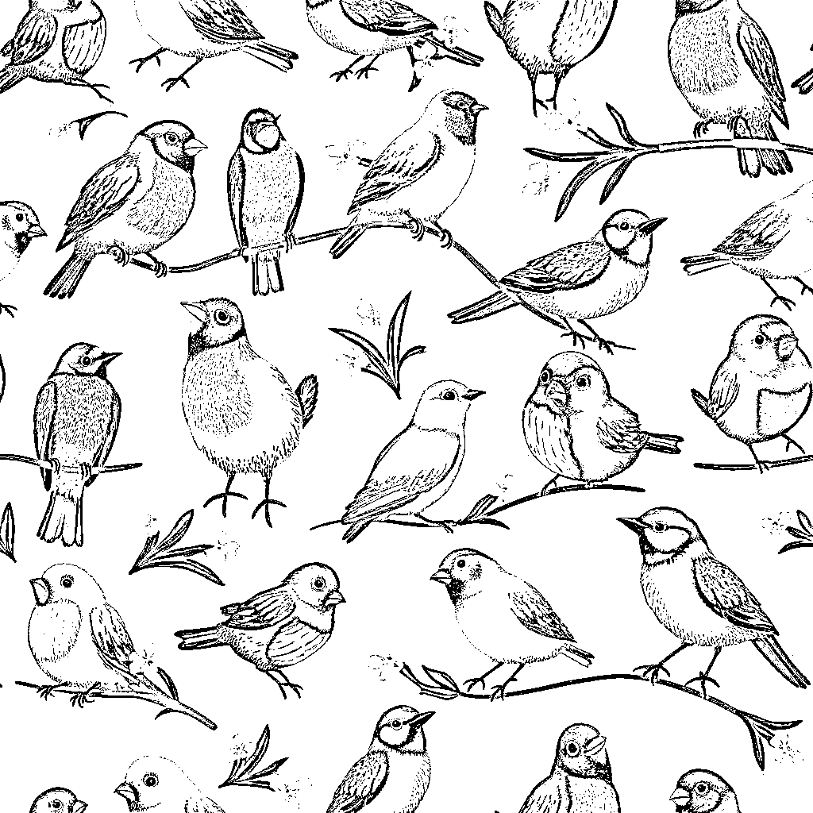
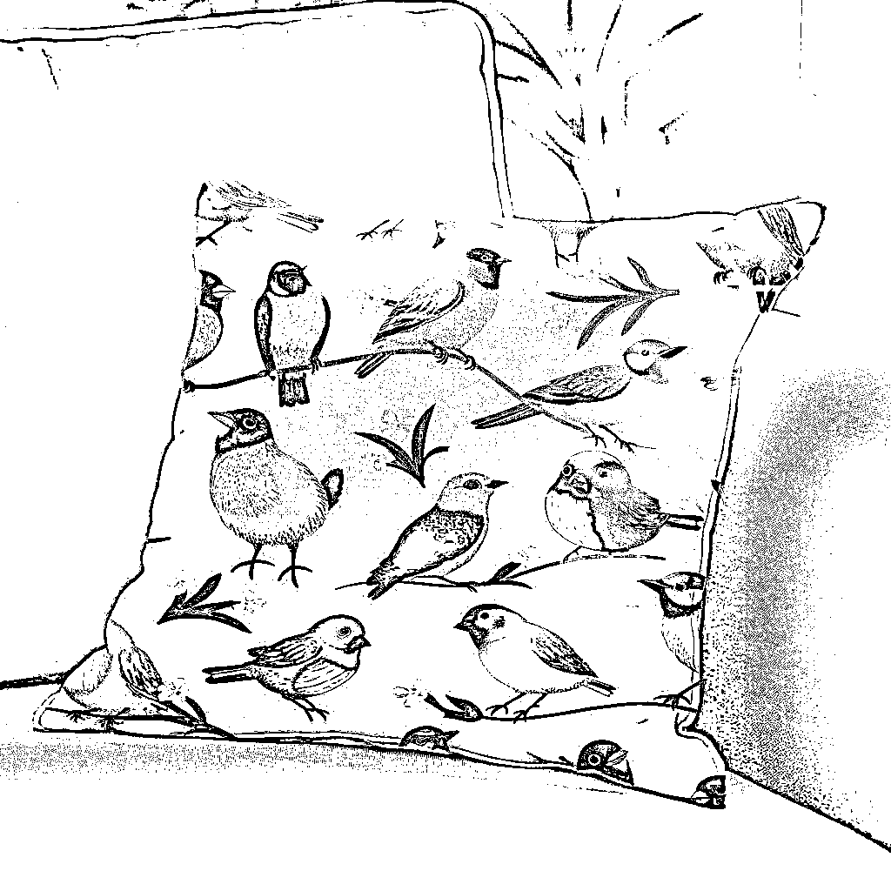
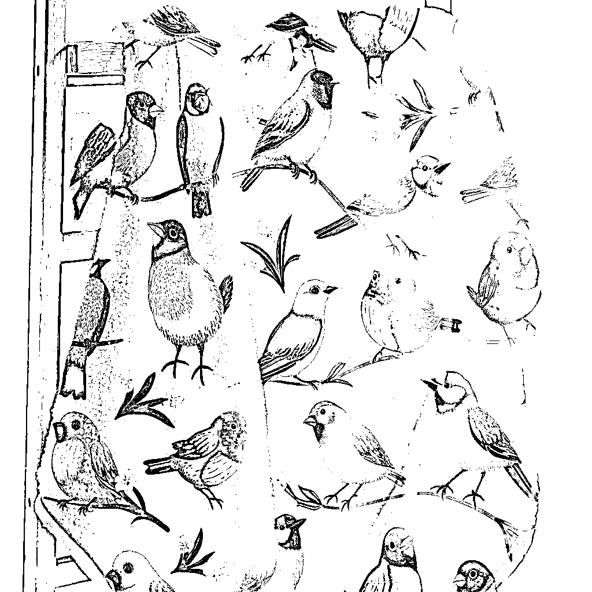
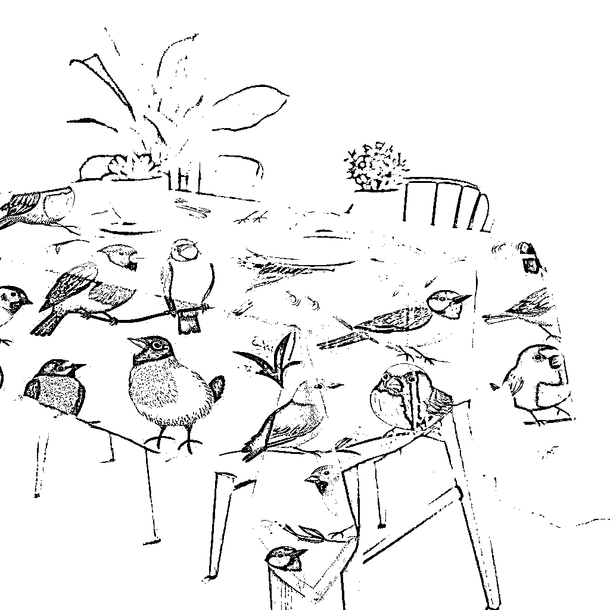
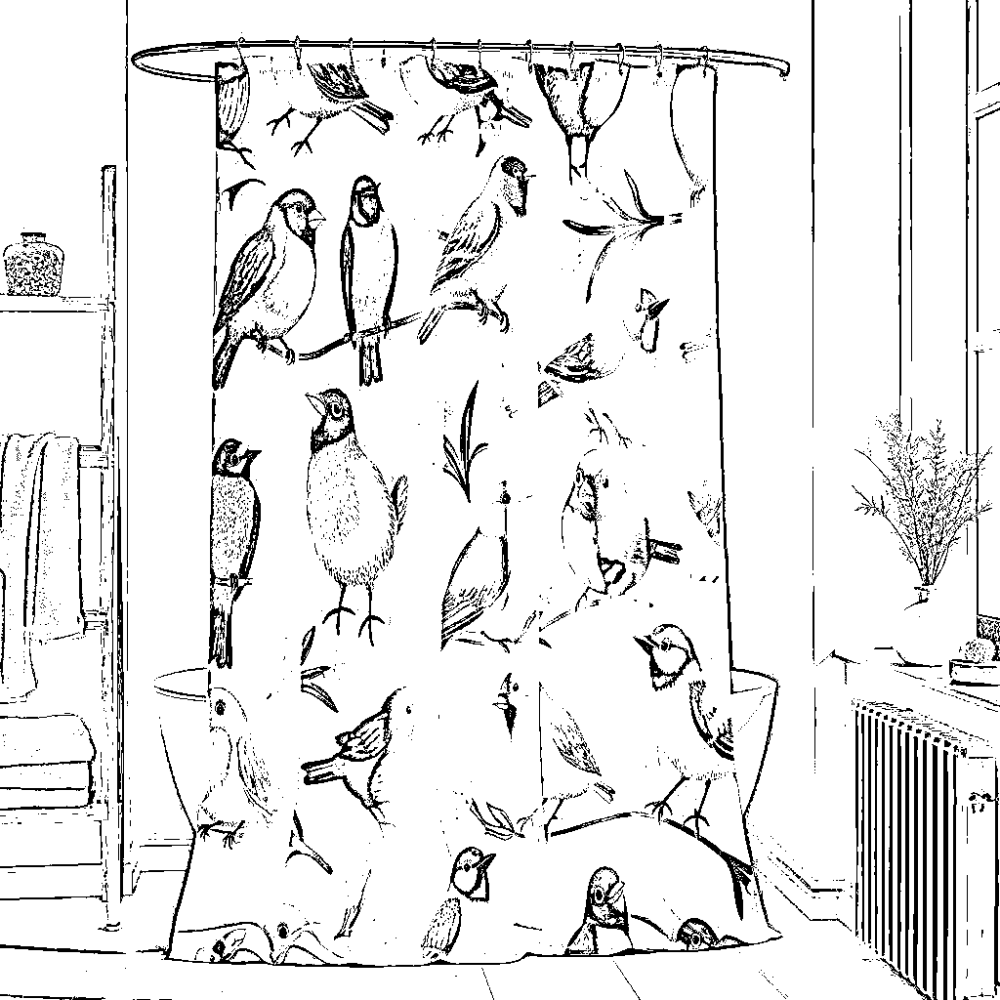